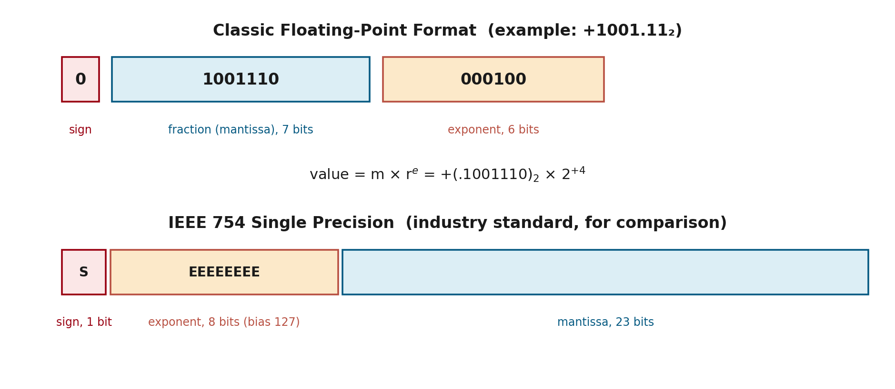

You've probably written a huge number in school using scientific notation, like 6,132,789 = 6.132789 × 10⁶ — a small set of meaningful digits, plus a power of 10 telling you where the decimal point really goes. Floating-point representation is exactly that same trick, done in binary, inside a computer. This page walks through how it works, with several fully worked examples, and ends by explaining a strange bug you may have already run into: why 0.1 + 0.2 doesn't equal 0.3 on a computer.
Why Not Just Use Fixed-Point?
On the previous page, every number had its binary point sitting in exactly one fixed spot. That's fine for everyday whole numbers, but it creates a real problem: if you want to store a huge number, you need many bits before the point; if you want a very precise, tiny fraction, you need many bits after the point. A fixed-width register can't give you both at once. Floating-point solves this by letting the point's position move — it "floats" — and storing where it moved to as a separate piece of information.
The Big Idea: Mantissa and Exponent
A floating-point number is split into two pieces stored side by side in the register:
- Mantissa (also called the fraction) — the actual meaningful digits of the number, written as a signed value.
- Exponent — a power of the base (2, for binary) that tells you how far, and in which direction, to slide the point.
value = mantissa × (base) ^ exponent
Only the mantissa and exponent — as plain bit patterns, each with their own sign — are physically stored in the register. The base (2) and exactly where the point sits inside the mantissa are never stored; both are just agreed conventions, the same way everyone agrees "Rs." means rupees without writing it out.
Worked Examples
Example 1 — a familiar decimal number
Take +6132.789. In scientific notation, you'd write this as 0.6132789 × 10⁺⁴. That's already exactly the mantissa/exponent split:
Mantissa = +0.6132789, Exponent = +04
Example 2 — a binary number
Take the binary number +1001.11. Stored with an 8-bit fraction and a 6-bit exponent, it becomes:
Mantissa = 01001110, Exponent = 000100, representing +(.1001110)₂ × 2⁺⁴

Fig 1: Classic floating-point layout vs. IEEE 754 single precision
Example 3 — converting a real number from scratch, step by step
Let's convert the decimal number +37.25 into mantissa/exponent form ourselves, one step at a time.
Step 1: 37.25 in binary is 100101.01
Step 2: slide the point left until only one digit (a 1) is before it:
100101.01 → 0.10010101 — slid 6 places
Step 3: Mantissa = 10010101, Exponent = +6 (000110)
+37.25 → Mantissa = 10010101, Exponent = 000110
Check it yourself: 0.10010101₂ = 0.58203125, and 0.58203125 × 2⁶ (=64) = 37.25 ✓
Normalization
A floating-point number is called normalized when the very first digit of the mantissa is 1, not 0. This squeezes the maximum possible precision out of a mantissa field that only has a fixed number of bits — no bits wasted on leading zeros.
Example A: 00011010 — 3 leading zeros
Shift left 3 → 11010000
Exponent reduced by 3
Example B: 00000101 — 5 leading zeros
Shift left 5 → 10100000
Exponent reduced by 5
The pattern is always the same: however many places you slide the mantissa left, subtract that same number from the exponent.
Representing Zero
Zero has no digit anywhere that isn't a zero, so it's mathematically impossible to "normalize" it — there's no 1 to slide into place. Zero gets a special exception: by agreement, it's simply stored as all-zero mantissa and all-zero exponent, full stop.
IEEE 754 and the "Bias" Trick
This section goes a little beyond Mano's textbook coverage, included because it's what real hardware actually uses today. Modern computers follow a standard called IEEE 754. For a common format called "single precision," the register is split into 1 sign bit + 8 exponent bits + 23 mantissa bits.
Here's the part that trips people up: those 8 exponent bits are plain unsigned bits (0 to 255) — but exponents need to represent negative values too. IEEE 754's fix is a bias: instead of storing the real exponent directly, it stores (real exponent + 127).
stored exponent = real exponent + 127
Real exponent +4 → stored = 4+127 = 131 = 10000011
Stored exponent 137 → real = 137−127 = +10
Because of this trick, a stored value of 127 means "exponent zero," anything below means negative, anything above means positive — all without a separate sign bit for the exponent.
🧩 This bias-and-rounding system is also the real reason 0.1 + 0.2 ≠ 0.3 in Python, Java, or almost any language. Neither 0.1 nor 0.2 can be written exactly in binary (the same way ⅓ can't be written exactly in decimal), so both get rounded to the closest representable value. Add those two tiny rounding errors together, and the sum lands one small step away from 0.3 — not a bug, just floating-point doing exactly what it always does.
Common Pitfalls
- Sliding the mantissa left always means subtracting from the exponent, never adding. Getting this backwards is the single most common mistake.
- The base and the mantissa's point position are never actually stored bits — only the signed mantissa and signed exponent exist in the register.
- Normalization is about precision, not range. Range is controlled separately, by how many bits the exponent field has.
- The IEEE 754 exponent field is biased, not a plain signed number — add or subtract 127 to move between "stored" and "real."
Applications
- Any calculation needing both huge range and fine precision — scientific computing, engineering simulations, financial modelling.
- Machine learning: neural network weights are usually stored in 32-bit or 16-bit floating-point; mantissa precision is exactly why "mixed precision" training trades a little accuracy for a lot of speed.
- Graphics, games, and physics engines: positions, velocities, and lighting all depend on floating-point for smooth, realistic behavior.
Summary
| Concept | Rule |
|---|
| Value formula | mantissa × 2^exponent |
| Normalized mantissa | First digit after the point is 1 |
| Shift mantissa left by k | Reduce exponent by k |
| Zero | All-zero mantissa AND all-zero exponent |
| IEEE 754 biased exponent | stored = real + 127 |